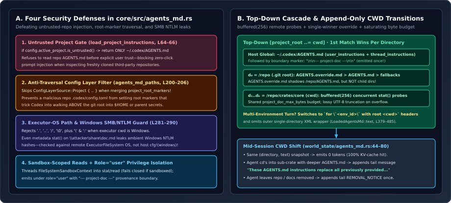

Hierarchical AGENTS.md Resolution: Root Discovery, Override Precedence, Untrusted Repo Gates & Mid-Session Replacements
Loading AGENTS.md files from a Git repository sounds like a 20-line recursive directory walk—until an untrusted repository plants a prompt-injection payload in AGENTS.md, a malicious .codex/config.toml redefines project_root_markers to walk into $HOME, or a UNC path in project_doc_fallback_filenames leaks Windows NTLMv2 hashes during a metadata probe. We dissect all 563 lines of core/src/agents_md.rs and world_state/agents_md.rs to see how OpenAI Codex hardens instruction discovery end-to-end.

WorldState CWD transitions in core/src/agents_md.rs.1. Four Security Defenses Hidden Inside AGENTS.md Discovery
Repository instruction files sit directly on an attacker-controlled trust boundary: anyone who convinces a developer to clone a repository controls every byte of its AGENTS.md and project-local .codex/config.toml. Before reading a single byte of project documentation, core/src/agents_md.rs enforces four distinct security invariants:
- Zero-Click Untrusted Repo Gate (
load_project_instructions, lines 63–66):
If the user has not explicitly marked the workspace trusted, Codex loads only host-supplied global instructions (let mut loaded = LoadedAgentsMd::from_user_instructions(user_instructions); if config.active_project.is_untrusted() { return Ok((!loaded.is_empty()).then_some(loaded)); }~/.codex/AGENTS.md) and skips repository discovery completely—neutralizing zero-click prompt injection when opening unfamiliar repos. - Anti-Traversal Config Layer Exclusion (
agents_md_paths, lines 200–206):
Why excludelet mut merged = TomlValue::Table(toml::map::Map::new()); for layer in config.config_layer_stack.layers_low_to_high() { if matches!(layer.name, ConfigLayerSource::Project { .. }) { continue; } merge_toml_values(&mut merged, &layer.config); }ConfigLayerSource::Projectwhen readingproject_root_markers? Suppose a trusted repository’s.codex/config.tomlsetproject_root_markers = [".ssh"]or a marker present in/home/alice. Walking upward until that marker matched would let the repo escape its own.gitboundary and ingest files from parent directories! Only user-, system-, or MDM-controlled config layers may define where upward traversal stops. - Executor-OS Path Convention & Windows SMB/NTLM Leak Prevention (
candidate_filenames, lines 281–290):
Look at the threat model in that comment: on Windows, calling// Use the executor's path convention, not the host's: resolving a Windows // network path can send ambient credentials even during metadata probes. if matches!(candidate, "." | "..") || candidate.contains(['/', '\0']) || cwd.infer_path_convention() == Some(PathConvention::Windows) && candidate.contains(['\\', ':']) { tracing::warn!("ignoring project_doc_fallback_filenames entry that is not a filename"); continue; }stat()(get_metadata) on a UNC path such as\\198.51.100.7\share\AGENTS.mdcauses the OS SMB redirector to initiate an outbound authentication handshake, leaking the user’s NTLMv2 hash before any file is even opened! Even sharper: Codex checkscwd.infer_path_convention()rather than compile-timecfg!(windows), because a macOS or Linux control plane may be driving a remote WindowsExecutorFileSystemoverexec-server. - Sandbox-Enforced File Reads & Fail-Closed Errors (lines 75–112): Whenever a turn environment lacks unrestricted disk read access (
!has_full_disk_read_access()), Codex constructs aFileSystemSandboxContextand threads it intofind_nearest_ancestor_with_markers,fs.get_metadata, andfs.read_file. Unsandboxed I/O errors log and continue; sandboxed errors fail closed (return Err(...)).
2. Top-Down Cascade, Override Precedence & Concurrent Remote Probes
Once root discovery locates the nearest ancestor containing a root marker (defaulting to [".git"], or [cwd] only when project_root_markers = []), Codex reverses the ancestor chain into top-down order $D = (d_0, d_1, \dots, d_k)$ where $d_0 = \text{project\_root}$ and $d_k = \text{cwd}$.
Within each directory $d_i$, let $C = (\texttt{AGENTS.override.md},\, \texttt{AGENTS.md},\, f_1, \dots, f_m)$ be the deduplicated candidate filename list. Codex selects at most one regular file per directory—the first match $c^* \in C$—and concatenates winners from root to leaf subject to a shared saturating byte budget $B = \texttt{project\_doc\_max\_bytes}$:
Two engineering details in agents_md_paths and read_agents_md (lines 142–180 and 244–269) make this fast and resilient across remote containers:
- Single-Winner Directory Shadowing: Placing a gitignored
AGENTS.override.mdin/repocleanly overrides/repo/AGENTS.mdfor local experimentation without silencing subdirectory-specific rules in/repo/codex-rs/core/AGENTS.md. buffered(MAX_CONCURRENT_ANCESTOR_PROBES)(256): In remote SSH/container setups backed byExecutorFileSystem, sequentialstat()calls across a 12-level monorepo hierarchy would pay 12 sequential network RTTs at startup. Pipingfutures::stream::iter(search_dirs)through.buffered(256)collapses discovery into a single batched flight while preserving deterministic root-to-leaf order!- UTF-8-Safe Truncation: If an oversized file exceeds
remainingbytes,data.truncate(remaining as usize)slices raw bytes and decodes viaString::from_utf8_lossy(&data), guaranteeing that cutting mid-codepoint never panics.
3. Provenance Separators, Multi-Environment Labels & Tail Replacements
How are discovered files formatted for the LLM, and what happens to the KV cache when the agent runs work inside a nested sub-package mid-session?
| Mechanism | Source Location | Exact Runtime Behavior |
|---|---|---|
role = "user" + --- project-doc --- | agents_md.rs:49, 407-412world_state/agents_md.rs:41 | Emits instructions as a user-role fragment (preserving system > developer > user authority) and inserts \n\n--- project-doc ---\n\n once on the transition from host user_instructions to workspace Project docs. |
| Multi-Environment Group Headers | agents_md.rs:379-384, 421-485 | When $\ge 2$ execution environments contribute docs, omits the outer single-cwd wrapper and prefixes each contiguous environment group once with for `<environment_id>` with root <cwd>. |
| Append-Only CWD Replacement | world_state/agents_md.rs:44-80 | Stores AgentsMdSnapshot { directory, text }. Unchanged snapshots emit 0 bytes; moving into a sub-crate with deeper docs appends REPLACEMENT_NOTICE at the tail; leaving all docs appends REMOVAL_NOTICE once. |
Read lines 64–75 of core/src/context/world_state/agents_md.rs to see the Sub-Series 01 philosophy come full circle:
let instructions = match (&self.instructions, previous_may_contain_instructions) {
(Some(instructions), true) => UserInstructions {
directory: instructions.directory.clone(),
text: format!("{REPLACEMENT_NOTICE}\n\n{}", instructions.text),
},
(Some(instructions), false) => instructions.clone(),
(None, true) => UserInstructions {
directory: None,
text: REMOVAL_NOTICE.to_string(),
},
(None, false) => return (Some(current), Vec::new()),
};Even when an agent navigates from the repo root into codex-rs/execpolicy/ on Turn 18 and picks up a brand-new crate-level AGENTS.md, Turn 1’s prefix remains byte-for-byte frozen on GPU HBM—Codex simply appends a self-contained replacement block at the conversation tail.
4. Questions worth answering
project_root_markers = [] (an empty array) in their global ~/.codex/config.toml?Per the module docs (line 14) and find_nearest_ancestor_with_markers, an empty marker list disables upward parent traversal completely: project_root resolves to None, search_dirs becomes vec![cwd] (line 239), and only cwd itself is probed for AGENTS.md.
AgentsMdSnapshot store the full rendered text: Option<String> (or compare against it) rather than caching file modification timestamps (mtime)?Filesystem mtime changes on git checkout, rebase, or touch operations even when file contents are identical, and remote executors may skew clocks. Comparing the exact rendered (directory, text) tuple guarantees zero false-positive KV-cache tail emissions while immediately catching real edits to AGENTS.md mid-session.